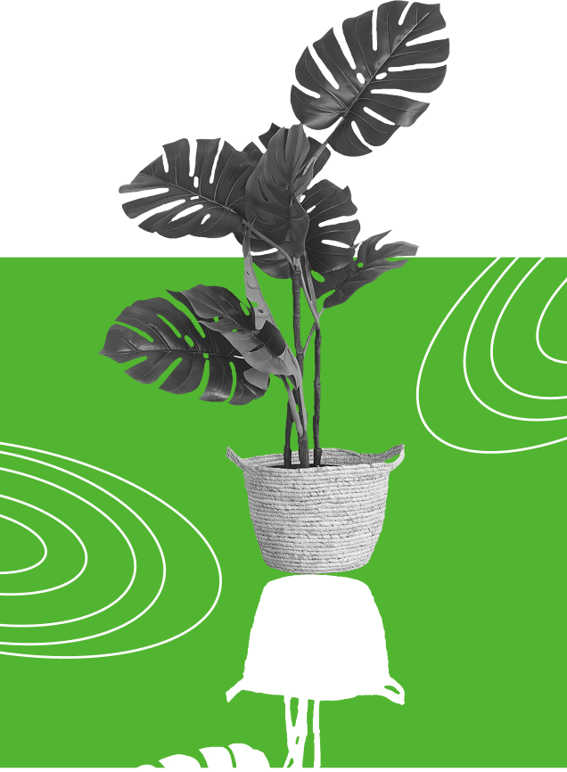

The green space
BRING THE GREEN SPACE TO YOUR OWN HOME
Plants are shown to boost moods, increase creativity, reduce stress, and eliminate air pollutants — making for a healthier, happier you. - By The Sill

Plants are shown to boost moods, increase creativity, reduce stress, and eliminate air pollutants — making for a healthier, happier you. - By The Sill